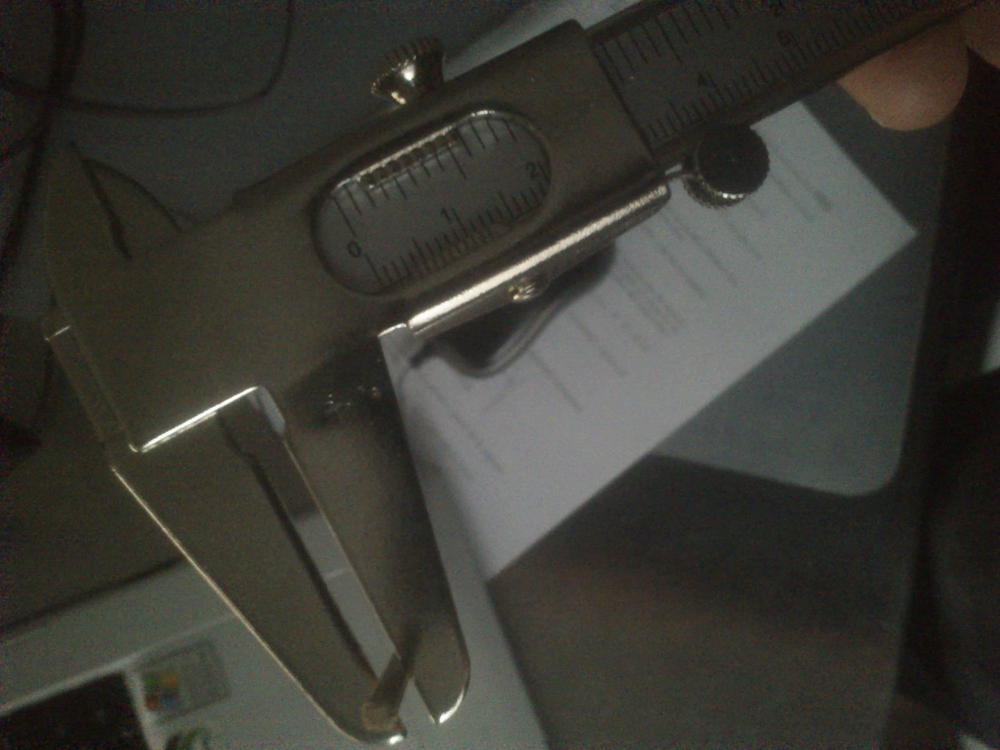

Repositorio de Matemáticas ESO
1º ESO
General
1º ESO
Matemáticas de 1º de la ESO. Esta documentación se realizó en 2015

blogroll
Pelican
Python.org
Jinja2
You can modify those links in your config file
social
You can add links in your config file
Another social link